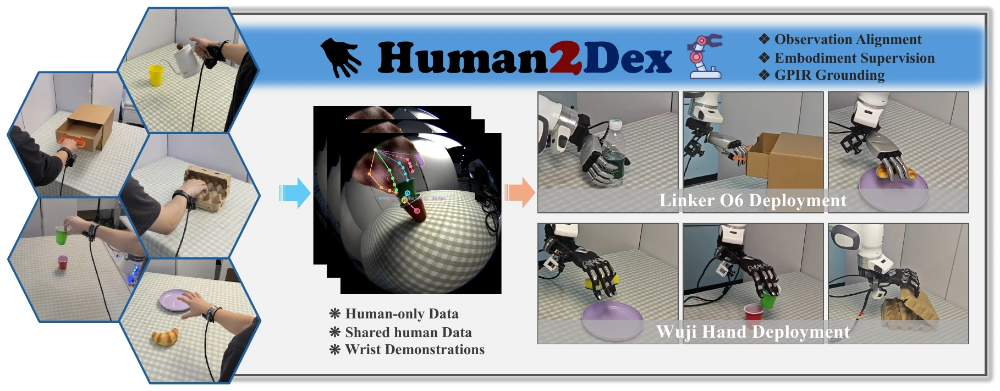
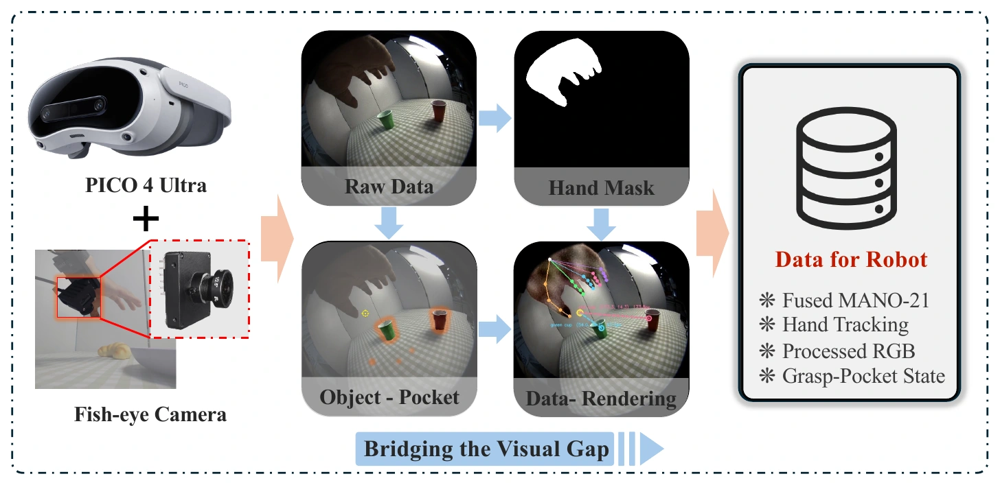
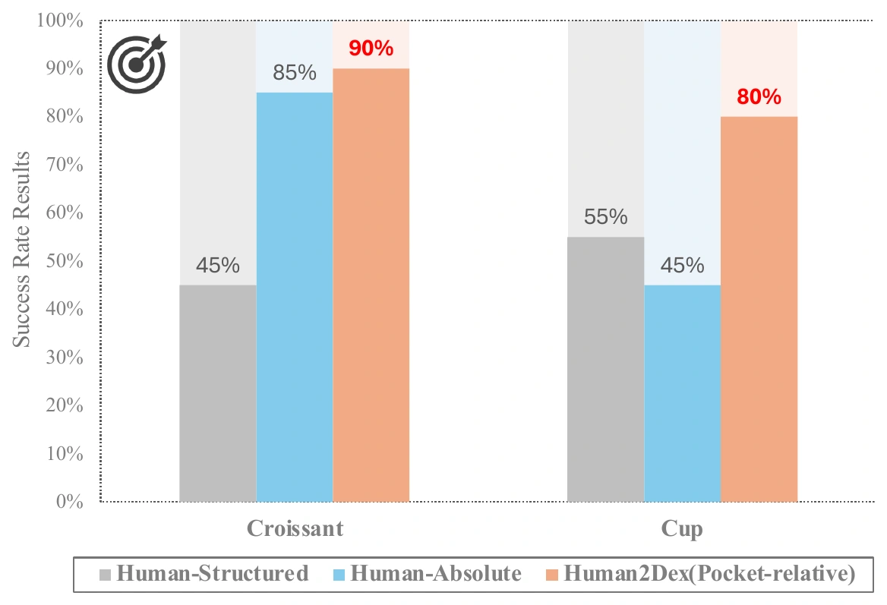
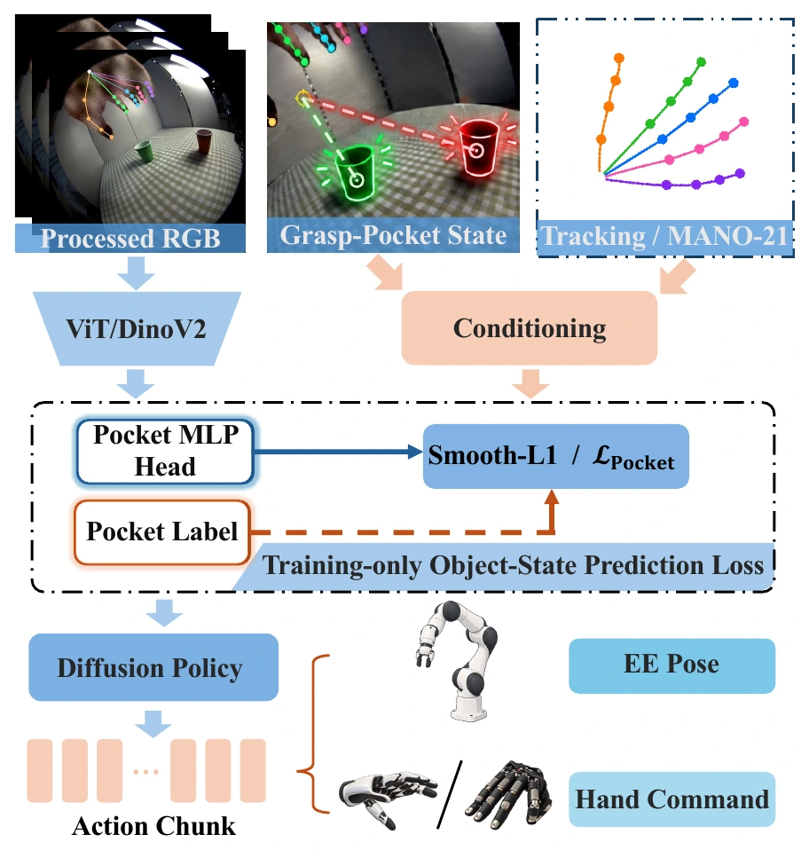

Align the observation
Local hand-appearance adaptation and a shared 21-point structure establish consistent observation semantics across human and robot hands.
HUMAN DEMONSTRATIONS → DEXTEROUS ROBOT LEARNING
One shared human demonstration corpus.
Two dexterous hands. Six real-world tasks.

THE IDEA
Human2Dex turns a shared corpus of wrist-centric human demonstrations into executable training data for different dexterous hands. Observation and motion semantics are shared; retargeting, action labels, and policies are specific to each hand and task.
ABSTRACT
Collecting dexterous manipulation demonstrations for each robot hand requires repeated task-specific data acquisition. We ask whether one shared corpus of natural human demonstrations can instead serve as a reusable data interface for different dexterous hands, without collecting task demonstrations on each target robot.
Human2Dex aligns observations through local hand-appearance adaptation and a shared 21-point hand representation. Fused human hand motion is retargeted to each target hand, while the Grasp-Pocket Interaction Representation (GPIR) expresses tracked objects relative to a hand-centered Functional Grasp Pocket. The same human corpus is converted into separate training sets for Linker O6 and Wuji, retaining hand-specific action labels, normalization, and diffusion policies.
01 / METHOD
Three complementary parts connect shared human data to each target embodiment.
Local hand-appearance adaptation and a shared 21-point structure establish consistent observation semantics across human and robot hands.
Fused PICO and wrist-RGB hand estimates generate executable, native action supervision separately for each calibrated hand.
GPIR describes tracked objects relative to the thumb–index grasp pocket, giving the policy an explicit object–hand relationship.

GRASP-POCKET INTERACTION REPRESENTATION
GPIR uses a hand-centered Functional Grasp Pocket to express object position, together with object scale and tracking reliability. This compact cue conditions the diffusion policy alongside the structural image and hand state.
Each hand–task pair has its own policy, action labels, and normalization. No target-robot task demonstrations are collected.


A DINOv2 encoder, hand state, and interaction state condition a 1-D U-Net that predicts a 16-step action sequence. The auxiliary object-regression head is used during training and omitted at deployment.
02 / REAL-WORLD DEMONSTRATIONS
Six tasks, spanning compliant grasping, precise placement, and coordinated contact.
Pick up a compliant sponge and place it on a target plate.
Pick up a croissant and place it on a plate while maintaining a stable grasp.
Place a green cup into a red cup with precise grasp alignment and insertion.
Lift a horizontal bottle and place it upright.
Stabilize the carton and lift its lid with coordinated fingers.
Engage the drawer handle and pull the drawer open.
Videos show representative trials. The counts summarize 20 physical trials per hand–task pair; switching views does not imply frame synchronization.
03 / EXPERIMENTAL RESULTS
Success rates across six tasks, with independent policy training for each hand–task pair.
LINKER O6
90.8%109 / 120 successesWUJI
80.8%97 / 120 successesA successful trial must satisfy the terminal criterion for 2 seconds. Both hands reuse the same human episode groups.
| Robot hand | Sponge | Croissant | Cup | Bottle | Egg Carton | Open Drawer | Overall |
|---|---|---|---|---|---|---|---|
| Linker O6 | 20/20 | 18/20 | 16/20 | 19/20 | 19/20 | 17/20 | 109/120 |
| Wuji | 19/20 | 17/20 | 17/20 | 16/20 | 13/20 | 15/20 | 97/120 |
Pooled success across both hands. Each configuration is trained independently using the same base episodes and evaluation protocol.
These are system-level configuration comparisons and do not isolate the causal effect of individual components. Pooled counts summarize the tested benchmark, rather than unseen-task performance.
04 / QUALITATIVE COMPARISONS
Representative Linker O6 wrist-view trials from the provided recordings.
Examples are separate trials, not synchronized executions. Quantitative conclusions are based on the full evaluation reported above.
SCOPE & FINDINGS
A single wrist-centric human corpus supports independently trained policies for two calibrated dexterous hands across six tasks.
Whole-object interaction cues are most helpful when grasp alignment matters. Localized contacts, such as a lid edge or drawer handle, may need finer-grained representations.
The study uses specified task objects and reliable image-space tracking. Transfer to arbitrary hand morphologies and shared policy checkpoints remains open.